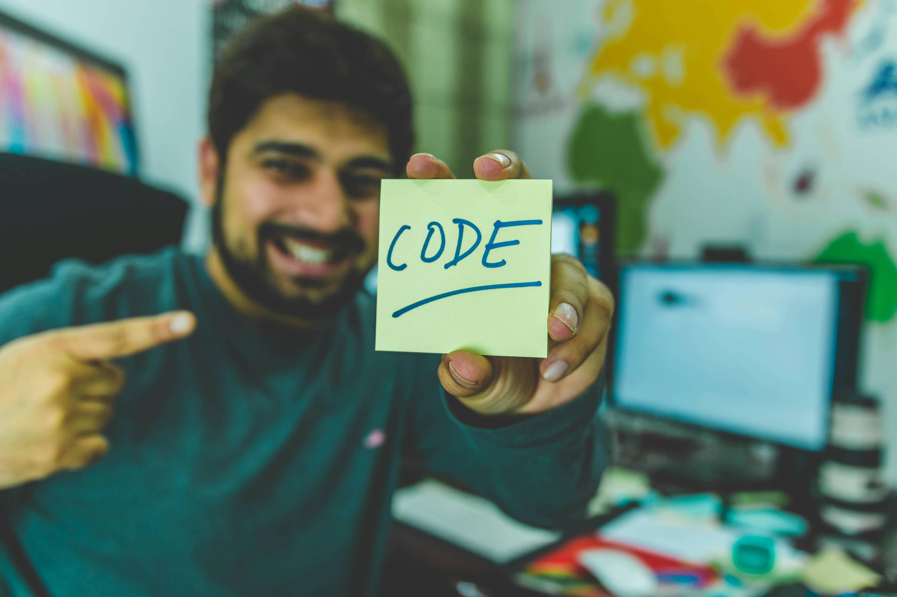
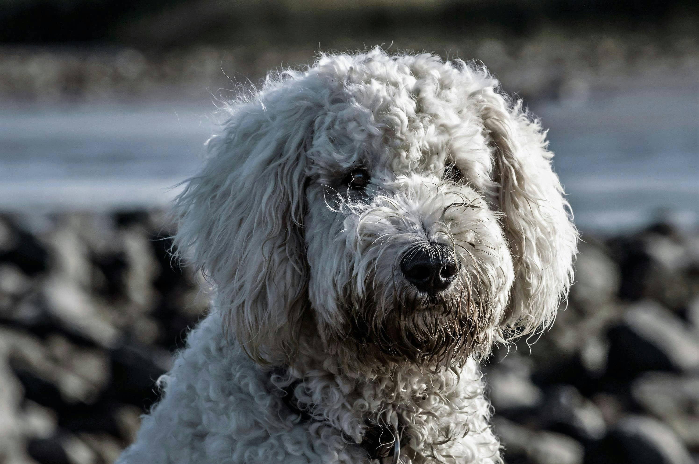

Die Welt des Codings fasziniert mich zutiefst – die Möglichkeit, Dinge aus dem Nichts zu erschaffen und komplexe Ideen in funktionierende Lösungen zu verwandeln, ist meine größte Motivation. Diese Begeisterung treibt mich an, kontinuierlich zu lernen und mich weiterzuentwickeln.
Als leidenschaftlicher Läufer weiß ich, dass Ausdauer und das Überwinden von Hürden zum Erfolg führen. Diese Mentalität bringe ich auch in meine Arbeit ein. Meine größte Motivation ist es, anderen Menschen zu helfen, in der digitalen Branche Fuß zu fassen und ihre eigenen Ziele zu erreichen. Ob durch die Entwicklung intuitiver Webanwendungen oder durch persönliches 1-on-1 Coaching – ich setze meine Fähigkeiten ein, um Wissen zu teilen und greifbare Ergebnisse zu schaffen. Und ja, ich liebe Hunde – sie erinnern mich daran, dass Freude und Loyalität auch im Berufsleben wichtig sind.
